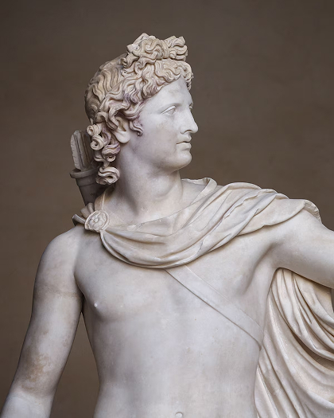

Gallery
Gallery
"Here, art is not simply displayed, but consecrated — a living testament to faith and beauty, where humanity and the divine meet, and every moment invites the soul to awaken."
- Francesco Podesti, Proclamation of the dogma
- Series of the Life of Christ
- Chapel of Urban VIII
- Niccoline Chapel
- Pieta
- Descent from the Cross
- Chapel of St. Peter Martyr
- Gallery of the Geographical Maps
- Donation of Rome
- Liberation of St Peter
-
 School of Athens
School of Athens
- Ceiling
-  Apollo Belvedere
- Crowning of Charlemagne
- River god
- statue of Laocoön
- The Creation of Adam
-
 AFranco Gentilini, Piazza San Pietro
AFranco Gentilini, Piazza San Pietro
- The Belvedere Torso
- Veronese, Vision of St Helen